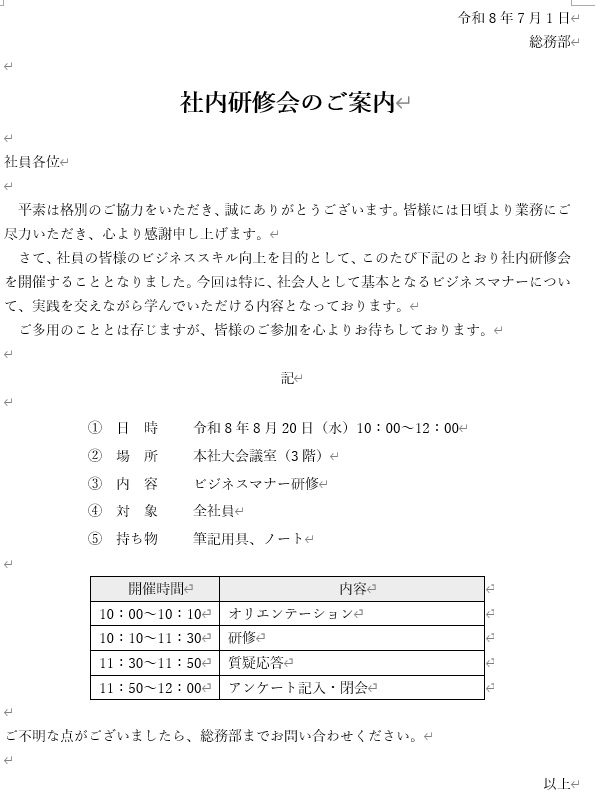
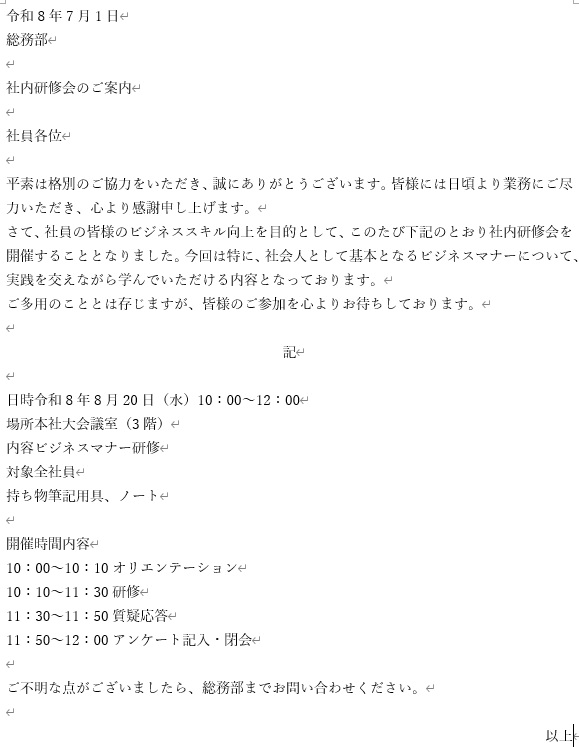
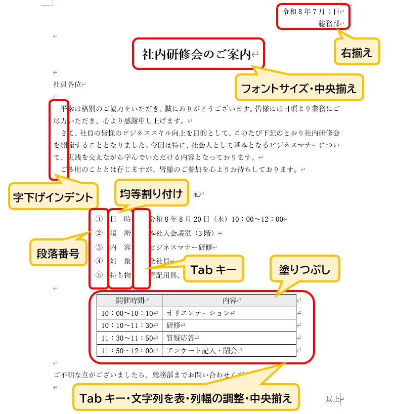
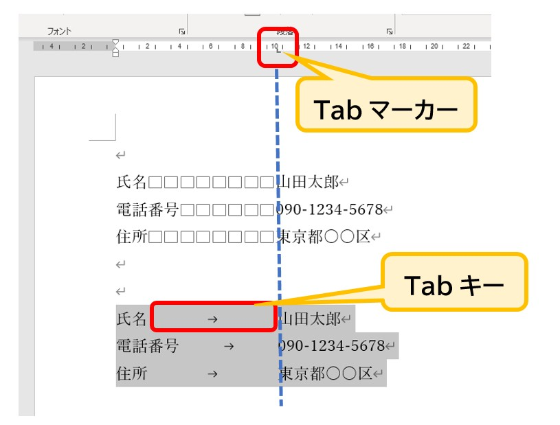

Wordで作る「社内文書」の整え方
社内文書を中心に、仕事にも大学のレポートにも役立つ基本ルール
仕事でWordを使う際、報告書や連絡書、マニュアル作成など「組織内での共有」を目的とした書類を作る機会が多くあります。
こうした社内文書で最も大切なのは、凝ったデザインではなく「誰が読んでも情報の見落としがないこと」です。
今回は一つの例題を通して、文字だけの状態からどのように情報を整理していけば、実務で役立つ分かりやすい書類になるのか、その共通ルールを確認しましょう。
最近は、文章の下書きをAIに任せる人も増えています。
ただ、AIが作ってくれるのは「文章」までです。
読みやすく整えて、相手に渡せる書類の形にする作業は、結局Wordを操作する自分の仕事になります。
文書作成の力は、AIが広がってもなくならず、むしろ「AIが書いた文章を仕上げる力」として必要になる場面が増えていくと私は考えています。
Wordが使われる場面は、社内文書だけではありません。
- 社内向けの案内文や報告書の作成
- 業務手順書や操作マニュアルの作成
- 大学のレポートや課題の作成
- 教授や上司から受けた修正指示への対応
- 脚注や引用元を付けた資料の作成
つまりWordは、文字を入力して印刷するだけのソフトではなく、文書を整え、修正し、相手に伝わる形に仕上げるための道具です。
この記事では社内文書を例題に基本を学びつつ、学業でも役立つ機能にも触れていきます。
すべての機能を覚える必要はありません。
自分が必要な場面で、適切な機能を使えることが大切です。
・社内文書の基本の形と、各部分の役割
・ビジネス文書としての適切な「配置」の考え方
・優先順位を明確にする「強調」のしかた
・項目の位置をそろえる「Tabキー」の使い方
・図や表を用いた情報の「整理」のしかた
・難しくないのに差がつく、Wordの便利機能
・よくある失敗と、送る前の最終チェック
・今の職場で大切にされているポイント
・変更履歴・コメント・脚注など、仕事と学業の両方で役立つ機能
1. まず知っておきたい「社内文書の基本の形」
社内文書は、取引先などに出す社外文書と比べて、あいさつを長くせず、要点を先に伝えるのが特徴です。
社外文書では「拝啓」「敬具」などの頭語・結語を使うことがありますが、社内文書では省略することが多く、そのぶん「誰が・いつ・何を伝えたいのか」がすぐ分かる形が求められます。
会社によって細かなルールは異なりますが、基本の構成は次のようになっています。
| 部分 | 内容 | 配置の目安 |
|---|---|---|
| 発信日 | 書類を出す日付 | 右上 |
| 発信者 | 部署名（必要に応じて氏名） | 右上（日付の下） |
| 宛先 | 「社員各位」など、誰に向けた書類か | 左上 |
| タイトル | 何の書類かを一言で示す | 中央・大きめ |
| 本文 | あいさつ、目的、お願いしたいこと | 左揃え |
| 記書き | 日時・場所・内容など、押さえてほしい要点 | 「記」は中央、項目は縦にそろえる |
| 結び | 書類の終わりを示す「以上」 | 右端 |
特に「記」以下は、日時や場所といった大事な情報を文章の中に埋もれさせず、あとから見返したときにすぐ見つけられるようにするための工夫です。
「案内の文章は読み飛ばされても、記書きだけは見てもらえる」くらいのつもりで作ると、読み手に親切な書類になります。
2. 完成図：目指すべき書類の形
それでは、今回作成する書類の完成した姿を見てみましょう。
日付、宛先、タイトル、そして詳細な情報。
これらが適切な場所に配置されることで、読み手は内容をスムーズに把握できるようになります。

▲ このような、スッキリと読みやすい書類を目標にします
3. 文字入力：まずは「内容」をすべて用意する
Wordで作成を始める際、あらかじめページのレイアウト（余白・行数・文字数・用紙サイズなど）を作る文書に合わせて変更しておくと、その後の編集作業がスムーズになります。
社内文書は、A4サイズの縦向きで作ることが一般的です。
書き始める前に、3つだけ決める
いきなり打ち始める前に、次の3つを頭の中で整理しておくと、文章が散らかりません。
- 誰に向けた書類か：今回は「社員各位」。相手が決まると、言葉づかいも決まります。
- 相手にしてほしいことは何か：今回は「研修に参加してもらうこと」。これが一番伝わるように組み立てます。
- 相手が知りたい情報は何か：日時・場所・内容・持ち物。ここが抜けていると、問い合わせが増えてしまいます。
社内文書は、前置きを長くせず、用件がすぐ分かることが大切です。
今回の例文も、あいさつ、目的、案内の順に並べています。
レイアウトと中身の方針が決まったら、形を整える前に「中身の文章」をすべて入力してしまいましょう。
タイピングに集中して、まずは左詰めのまま必要な情報を打ち込みます。
太字や中央揃えなどの操作は、最後に行うのが最も効率的です。
総務部
社内研修会のご案内
社員各位
平素は格別の協力をいただき、誠にありがとうございます。皆様には日頃より業務にご尽力いただき、心より感謝申し上げます。
さて、社員の皆様のビジネススキル向上を目的として、このたび下記の通り社内研修会を開催することとなりました。今回は特に、社会人として基本となるビジネスマナーについて、実践を交えながら学んでいただける内容となっております。
ご多用のこととは存じますが、皆様のご参加を心よりお待ちしております。
記
日時 令和8年8月20日（木） 10:00～12:00
場所 本社大会議室（3階）
内容 ビジネスマナー研修
対象 全社員
持ち物 筆記用具、ノート
開催時間 内容
10:00～10:10 オリエンテーション
10:10～11:30 研修
11:30～11:50 質疑応答
11:50～12:00 アンケート記入・閉会
ご不明な点がございましたら、総務部までお問い合わせください。
以上
途中で「記」という文字を入力して Enter キーを押すと、自動的に「記」が中央へ移動し、次の行に「以上」という文字が右端に出現することがあります。
これは「入力オートフォーマット」というWordの便利な機能です。
もし自動で出た場合は、そのまま利用してOKです。
出なかった場合も、最後にご自身で入力して整えれば全く問題ありません。

▲ 文章を打ち終えた「素材」の状態です。ここから整えていきます。
4. 解説：見やすさを生む「理由」を知る
打ち込んだ文字をどう動かせば、分かりやすい書類になるのでしょうか。
現役講師が改善のアドバイスを送るイメージで、操作の「理由」を確認していきましょう。

▲ どの操作にも「読み手のため」という理由があります
情報の役割ごとに場所を決める（配置のルール）
日付や発信元を右に寄せ、タイトルを中央に配置します。
【理由】
日付などは「いつ・誰が」という記録用の情報なので、右上にまとめておくことで本文の邪魔をしません。
逆にタイトルは「書類の主題」なので、中央に大きく置くことで、読み手が何の書類かを一瞬で判断できるようになります。
重要な情報に優先順位をつける（強調のしかた）
タイトルを大きくし、太字に変更します。
【理由】
すべて同じ大きさの文字が並んでいると、どこが重要なのかが分かりにくくなります。
メリハリをつけることで、読み手の注意を最も大切な場所へ引きつけることができます。
ここで気をつけたいのが、強調のしすぎです。
太字、下線、色、枠をあれもこれもと重ねると、結局どこも目立たなくなります。
社内文書では、強調するのはタイトルと、どうしても見落としてほしくない箇所だけにとどめるのがコツです。
縦のラインを揃えて視線を安定させる（整列のしかた）
詳細項目の幅を揃え、続く内容の開始位置を縦に一直線に並べます。
【理由】
文字の開始位置が揃っていると、脳は情報を整理しやすくなります。
均等割り付けやTabキーを使い、見えない「縦のライン」を通すことで、清潔感のある読みやすい紙面になります。
文字の位置をそろえるとき、スペースを何個も入力して調整する方法もありますが、後から文字を修正すると位置がずれやすくなります。
「間を空けたいならスペース」「位置をそろえたいならTab」と使い分けるのがポイントです。
Wordでは、ルーラー上にTab位置を示すマーカーを設定し、Tab キーを押すことで、文字の開始位置をそろえることができます。
もしルーラーが表示されていない場合は、「表示」タブ → 「表示」グループ → 「ルーラー」にチェックを入れると、文書の上部にルーラーが表示されます。

▲ ルーラー上にTabの位置を設定すると、決めた位置までカーソルを移動できます
複雑な情報を構造化する（表の活用）
時間割などの細かいデータは、枠線（表）で囲み、項目に色をつけます。
【理由】
今回は、あらかじめ打ち込んでおいた文字を後から表に変換する機能を使っています。
もちろん、最初から表を挿入して直接入力する方法もあり、状況に合わせて作りやすい方を選んで大丈夫です。
表形式にすることで情報の対応関係が明確になり、見出しに薄い色を塗ることで区切りが視覚的にハッキリし、読み間違いを防げます。
色を使うときは、印刷したときのことも考えておきましょう。
職場ではモノクロで印刷されることも多いため、濃い色を塗ると文字が読みにくくなります。
見出しの色は薄めの色にしておくと、画面でも印刷でも見やすい書類になります。
5. 知っておくと差がつく、Wordの便利機能
ここでは、難しい操作ではないのに、知っているだけで作業が楽になる機能を紹介します。
すべてを一度に覚える必要はありません。
「こんな機能があった」と頭の片すみに置いておくだけで、困ったときに思い出せます。
なお、ボタンの名前や位置は、お使いのWordのバージョンによって少し違う場合があります。
編集記号の表示：見えない「ズレの原因」を見つける
「ホーム」タブの「段落」グループにある「（編集記号の表示/非表示）」ボタンを押すと、スペースやTab、Enterで入れた改行の位置が、画面に記号として表示されます。
「なぜか位置がそろわない」「空白の行が消えない」というときは、この機能で原因が見つかることがよくあります。
印刷には出ないので、気軽にオン・オフを切り替えてみてください。
元に戻す・やり直し：操作の失敗は怖くない
Ctrl + Z で直前の操作を元に戻せます。
戻しすぎたときは Ctrl + Y でやり直せます。
「失敗したらどうしよう」と手が止まってしまう初心者の方こそ、最初に覚えてほしい操作です。
こまめな保存：データを失わないために
Ctrl + S で上書き保存ができます。
Microsoft 365では保存先によって自動保存が働くこともありますが、いつも使えるとは限りません。
「1つ作業が終わったらCtrl+S」を習慣にしておくと、急なトラブルでも被害を小さくできます。
検索と置換：まとめて直す
Ctrl + H で「検索と置換」の画面が開きます。
たとえば、前回の書類を使い回して作るときに「令和7年」を「令和8年」に一括で直したいときなどに便利です。
ただし、「すべて置換」を押す前に、意図しない場所まで変わらないか確認しましょう。
文字カウント：指定の文字数に合わせる
「校閲」タブの「文字カウント」を使うと、文字数や行数が確認できます。
画面の左下にも文字数が表示されています。
「300字程度で」といった指示があるときに役立ちます。
書式のコピー／貼り付け：同じ見た目をすばやくそろえる
「ホーム」タブにある、ほうきの形のボタンが「書式のコピー/貼り付け」です。
見た目を整えた部分を選んでこのボタンを押し、別の場所をなぞると、文字そのものは変えずに、フォントや大きさ、色などの書式だけをコピーできます。
複数の場所に使いたいときは、ボタンをダブルクリックしておくと連続して貼り付けられます。
箇条書きと段落番号：番号を手で打たない
「ホーム」タブの「段落」グループにある箇条書き・段落番号のボタンを使うと、行頭の記号や番号が自動で付きます。
項目を追加したり順番を入れ替えたりしても、番号が自動で振り直されるので、手で「1.」「2.」と打つよりも修正が楽です。
スペルチェックと文章校正：うっかりミスを減らす
「校閲」タブの「スペルチェックと文章校正」（F7 キー）を使うと、誤字や表記のゆれの候補を教えてくれます。
ただし、あくまで「候補」を出してくれる機能です。
日付や人の名前の間違いなどは見つけてくれないことが多いので、最終的な確認は自分の目で行います。
ページ区切り：次のページに送るときはこれ
Ctrl + Enter を押すと、その位置でページが区切られます。
Enterキーを何度も押して次のページに送る方法よりも、前の内容を修正したときに崩れにくくなります。
6. 実務でよくある失敗と直し方
ここからは、初心者の方がつまずきやすい「あるある」です。
どれも操作を知らないというより、知らないまま自己流で整えてしまうことが原因で起こります。
スペースキーで位置を合わせている
画面ではそろって見えても、文字を1つ直すだけでズレます。
印刷したときや、別の人のパソコンで開いたときに崩れることもあります。
位置の調整には、Tabキーや中央揃え・右揃えを使いましょう。
Enterキーを何回も押して、次のページに送っている
前の行を修正すると、空白の行が途中に出たり、ページの先頭がずれたりします。
ページを分けたいときは、先ほど紹介した Ctrl + Enter（ページ区切り）を使うと崩れにくくなります。
ほかの場所からコピーして、書式が混ざった
WebサイトやメールのほかAIの回答をそのまま貼り付けると、フォントや文字サイズ、行間などの設定まで一緒に入ってしまい、文書の一部だけ見た目が違ってしまうことがあります。
貼り付けた直後に表示される「貼り付けのオプション」から「テキストのみ保持」を選ぶと、文字だけが入り、見た目は今の文書にそろいます。
AIの文章を使う機会が増えた今、特に覚えておきたい操作です。
フォントや文字サイズがバラバラになっている
文書の中で、フォントが2種類・3種類と混ざっていると、読み手はなんとなく落ち着かない印象を受けます。
基本は、本文は1種類のフォントと1つの文字サイズにそろえ、変えるのはタイトルなど必要な箇所だけにします。
番号や記号を手で打っている
「1.」「2.」を自分で入力すると、項目を増やしたときに番号を打ち直すことになります。
Wordの箇条書き・段落番号の機能を使えば、順番の入れ替えにも自動で対応します。
前回の書類を使い回して、古い情報が残っている
前回の書類を元にして作るのは効率的ですが、日付や曜日、会場名などが前回のまま残ってしまうミスは、実務でとてもよくあります。
使い回すときほど、「変えるところ」を意識して、1か所ずつ確認しましょう。
7. 今の職場で大切にされているポイント
Wordの操作そのものは昔から大きく変わっていませんが、書類の「使われ方」は変わってきています。
操作を覚えるだけでなく、今の職場で何が大切にされているかを知っておくと、実務で戸惑いにくくなります。
画面で読まれることが前提になっている
以前は、書類は印刷して配るものというイメージでした。
今は、パソコンやタブレット、スマートフォンで画面を見ながら確認する人も増えています。
そのため、文字が小さすぎないか、1行が長すぎないか、情報が詰め込まれすぎていないかといった視点が大切になっています。
紙1枚に収める工夫は今でも有効ですが、画面で見ても要点が伝わる書類を意識しましょう。
Wordのまま送らず、PDFにすることも多い
Wordのファイルは、相手のパソコンやスマートフォンの環境によって、行の位置や文字の並びが少し変わってしまうことがあります。
修正してもらう必要がない書類を送るときは、PDFにして送ると、見た目が崩れにくくなります。
「ファイル」タブ → 「エクスポート」 → 「PDF/XPSドキュメントの作成」で作れます。
「名前を付けて保存」の画面で、ファイルの種類にPDFを選ぶ方法もあります。
ファイルは「共有される」前提で名前をつける
職場では、作ったファイルを共有フォルダやクラウドに置いて、複数の人で使うことが増えています。
このとき困りがちなのが、「最終」「最終2」「最終（修正）」のようなファイルがいくつも並んでしまい、どれが最新か分からなくなる状態です。
たとえば「20260701_社内研修会のご案内」のように、日付と内容が分かる名前にしておくと、探しやすく、取り違えも防げます。
会社にファイル名のルールがあれば、それに合わせます。
情報の取り扱いに気をつける
社内文書であっても、名前や連絡先といった個人の情報、社外に出してはいけない内容が含まれることがあります。
メールで送るときは、宛先と添付ファイルを送信前にもう一度確認する習慣をつけましょう。
Wordには、ファイルに残った個人情報や隠れた情報を調べる「ドキュメント検査」という機能もあります（「ファイル」→「情報」→「問題のチェック」）。
今すぐ使いこなす必要はありませんが、こういう機能があることを知っておくと安心です。
AIが書いた文章は「確認してから」使う
AIに下書きを頼むと、整った文章がすぐに出てくるので、とても便利です。
一方で、日付や数字、固有名詞が間違っていても、自然な文章のまま出てくることがあります。
AIの文章は、事実の確認を自分で行ってから使うのが基本です。
また、会社の内部情報や個人情報を入力してよいかどうかは、会社のルールによって異なります。
職場でAIを使う場合は、そのルールを確認してからにしましょう。
会社のひな形（テンプレート）があれば、それを使う
多くの会社には、案内文や報告書の「ひな形」があります。
ひな形がある場合は、自分流に作り直さず、そのひな形に合わせて作るのが基本です。
形がそろっていると、読む側も内容を探しやすくなるからです。
ひな形がないときは、先輩が作った過去の書類を見本にすると、その職場の「いつもの形」が分かります。
8. 仕事でも学業でも役立つ：修正のやりとりと脚注
Wordは、社会人になってから覚えればよいソフトではありません。
大学でも、レポートや課題の提出にWordが使われています。
実際に、Wordの使い方が分からないという理由で、当スクールに学びに来た大学生がいました。
レポートは、文章を入力して提出すれば終わりとは限りません。
授業によって異なりますが、教授が変更履歴やコメントで修正箇所を示し、学生がその指摘を確認して直し、再提出するという流れもあります。
こうした場面では、文章を打てるだけではなく、指摘された箇所を見つけて対応する操作が必要です。
Wordの操作に慣れていないと、必要な機能が使えず困ってしまうことがあります。
これは仕事でも同じで、上司や先輩からの修正指示に対応するときに役立ちます。
変更履歴とコメント：修正を「見える形」にする
「校閲」タブの「変更履歴の記録」をオンにすると、そのあとに行った文章の追加や削除が記録され、どこが変わったのかを確認できます。
コメントは、本文そのものを書き換えずに、指摘や補足を書き込める機能です。
「ここの表現を確認してください」といった伝え方ができます。
修正付きのファイルを受け取ったとき
まず、変更された箇所とコメントの内容を順に確認します。
変更を取り入れる場合は「校閲」タブの「承諾」、取り入れない場合は「元に戻す」（バージョンによっては「拒否」）を使います。
ここで注意したいのが、「承諾・拒否」と「表示の切り替え」は別の操作だということです。
変更履歴の表示を切り替えても、見え方が変わるだけで、変更を承諾したことにはなりません。
最終版を提出・共有するとき
変更履歴やコメントを残したまま出すのか、承諾して整理した状態で出すのかは、提出先によって異なります。
大学の課題や職場のルールで指定があれば、その方法に従います。
指定がない場合は、先生や上司に確認すると安心です。
送る前に、不要なコメントや変更履歴が残っていないかを見直す習慣もつけておきましょう。
脚注と文末脚注：引用元や補足を示す
大学のレポートや卒業論文では、資料を引用したり、補足説明を付けたりするためにWordを使うことがあります。
脚注は、本文中の該当箇所に番号を付け、ページの下部に補足説明や出典を書く機能です。
番号は自動で付くので、途中に脚注を追加しても振り直されます。
文末脚注は、同じように本文に番号を付けますが、注釈を文書の末尾にまとめて書く機能です。
「参考資料」タブの「文末脚注の挿入」で入れられます。
なお、参考文献一覧は、脚注や文末脚注とは別のものです。
脚注は本文の特定の箇所に付ける注、参考文献一覧は利用した資料をまとめて示す一覧、と区別しておきましょう。
他の人の文章や資料を使うときは、引用元を示すことが大切です。
これは学業でも仕事でも同じです。
引用や参考文献の書き方は、大学や授業、あるいは職場ごとに指定がありますので、その指示に従ってください。
ここでは、Wordにこうした機能があり、学業でも使われていると知っておくだけで十分です。
Wordの機能をすべて覚える必要はありません。
大切なのは、レポートの修正指示が来たとき、上司からコメントが付いたときなど、自分が必要とする場面で、適切な機能を使えることです。
そのために、基本の操作と「こんな機能がある」という知識を、少しずつ増やしていきましょう。
9. 送る前の最終チェック
書類は、整え終わった後の確認までが仕事です。
見た目がきれいに仕上がっていても、曜日が1つ違うだけで、あとから訂正の連絡が必要になります。
内容を確認する習慣は、立派なスキルの一つです。
実はこの記事の例文も、「8月20日」の曜日が合っているか、カレンダーで確認してから書いています。
次のチェックリストを、送る前に1つずつ見直してみてください。
| 確認すること | 見るポイント |
|---|---|
| 日付と曜日 | カレンダーで、日付と曜日が合っているか確認する |
| 時間・場所・数字 | 開始時刻、会議室の名前、人数などに間違いがないか |
| 宛先と発信者 | 「誰から誰へ」の書類なのかが分かるか |
| 表記のそろい | 年号（令和・西暦）や数字の全角・半角が統一されているか |
| 印刷プレビュー | 最後の1行だけ次のページにはみ出していないか（Ctrl + P で確認） |
| 声に出して読む | 変換ミスや、同じ言葉の重なりに気づきやすくなる |
| 送信前の最終確認 | ファイル名、宛先、添付ファイル、変更履歴の消し忘れ |
Wordの操作は「ボタンを覚えること」がゴールではありません。
「どうすれば相手が楽に読めるか」を考えることが、本当のスキルアップに繋がります。
社内の議事録や報告書など、あらゆる書類に今回の考え方を活用してみてください。
初心者の方ほど、色をつけたり飾り枠を入れたりして、「頑張った感」を出したくなります。
気持ちはとてもよく分かります。
でも、社内文書で一番大切なのは、見た人が迷わず動けることです。
実務で評価されるのは、派手な書類よりも、いつも同じ形でスッキリ整っている書類だと私は考えています。
「配置・強調・整列」の3つを丁寧にやるだけで、十分に「仕事ができる人の書類」に見えますよ。
10. 自分で作って身につけよう：練習のすすめ
操作は、読んだだけではなかなか身につけられません。
この記事の例題を作り終えたら、同じ形を使って、別の内容で書類を作り直してみましょう。
題材は、たとえば次のようなものがおすすめです。
- 部署内の「定例会議のお知らせ」
- 「備品の整理にご協力のお願い」
- 「避難訓練の実施について」
作るときは、次の5つを条件にしてみてください。
- 用紙はA4縦、1ページに収める
- 日付と発信者を右上、宛先を左上に置く
- タイトルを中央に配置し、大きく太字にする
- 「記」以下の項目を、Tabキーでそろえる
- 最後に印刷プレビューで確認し、PDFで保存する
同じ形を別の内容で作り直すと、操作が「覚えたもの」から「自分で使えるもの」に変わります。
最初のうちは時間がかかっても大丈夫です。
2回、3回と作るうちに、手が自然に動くようになります。
学生の方は、レポートに脚注を1つ付けてみる、変更履歴をオンにして自分の文章を直してみる、といった練習もおすすめです。
11. よくある質問
Q. 「記」と入力しても、自動で中央に移動しません。
お使いの環境や設定によっては、自動で整わないことがあります。
その場合は、「記」を中央揃えにして、最後の行に「以上」を右揃えで入力すれば、同じ見た目に整えられます。
自動で出なくても問題ありません。
Q. 日付は「令和」と「西暦」のどちらで書けばいいですか？
会社によって決まりがあることが多いです。
社内で使われている書き方に合わせるのが基本で、わからなければ、先輩が作った書類を見て確認しましょう。
大切なのは、1つの書類の中で表記がそろっていることです。
Q. 社内文書でも、「拝啓」「敬具」は必要ですか？
社内文書では、省略するのが一般的です。
ただし、会社のひな形に入っている場合は、それに従います。
Q. 数字は全角と半角のどちらがいいですか？
これも会社のルールによります。
ルールがない場合は、書類の中で統一されていることが一番大切です。
日付や時刻、金額などの数字は、半角でそろえている書類が多く見られます。
Q. 見た目をきれいに整えるのに、時間がかかってしまいます。
最初は誰でも時間がかかります。
まずは、文字をすべて入力してから整える流れを守り、操作は「配置・強調・整列」の3つに絞ってみましょう。
繰り返し作るうちに、自然と早くなります。
Q. 先生から、変更履歴やコメントの付いたファイルが返ってきました。どうすればいいですか？
まず、変更された箇所とコメントの内容を順に確認しましょう。
取り入れる修正は「承諾」、取り入れない場合は「元に戻す」を使います。
提出するときに変更履歴やコメントをどうするかは、先生の指示に従ってください。
Q. 脚注と参考文献一覧は、何が違うのですか？
脚注は、本文中の特定の箇所に付ける補足や出典です。
参考文献一覧は、利用した資料をまとめて示す一覧です。
どちらをどのように使うかは、大学や授業の指定に従います。
Q. この記事の内容は、大学のレポートにも使えますか？
はい。文字を先に入力して後から整える流れ、Tabキーでの位置そろえ、印刷プレビューでの確認などは、レポートでも同じように役立ちます。
ただし、書式や提出方法には、授業ごとの指定がありますので、指示を優先してください。
まとめ
Wordを使えば、同じ文章でも全く違う印象の書類に仕上げることができます。
まずは以下の基本を意識してみてください。
- 基本の形を知る：発信日、宛先、タイトル、本文、記書きといった、社内文書の流れをつかむ。
- 事前のレイアウト設定：作成前に用紙サイズや余白を決めておく。
- 配置のルール：日付は右、タイトルは中央。情報の役割に合わせる。
- 適切な強調：文字の大きさに差をつけ、優先順位を示す。ただし、強調しすぎない。
- 縦の整列：項目の位置を揃えるときは、スペースではなくTabキーを活用する。
- 情報の整理：複雑な内容は表を活用して分かりやすくする。
- 便利機能の活用：編集記号の表示、元に戻す、検索と置換などを味方にする。
- 失敗の予防：貼り付けは「テキストのみ保持」を使い、前回の書類の古い情報に注意する。
- 送る前の確認：日付・曜日・時間・宛先を見直し、印刷プレビューで確認する。
- 今の職場に合わせる：PDFでの共有、ファイル名のつけ方、AI文章の確認などの習慣を身につける。
- 修正のやりとり：変更履歴とコメントの役割を知り、「承諾」と「表示の切り替え」を区別する。
- 脚注の活用：レポートなどで、補足や出典を示すときに使える。書き方は指定に従う。
今回は研修の案内を一例にしましたが、この方法は報告書やマニュアルなど、あらゆる社内文書に応用でき、大学のレポートなど学業の場面でも役立ちます。
まずは見本を見ながら、一歩ずつ自分の手で形にしてみてください。
その積み重ねが、実務での自信と信頼に繋がります。